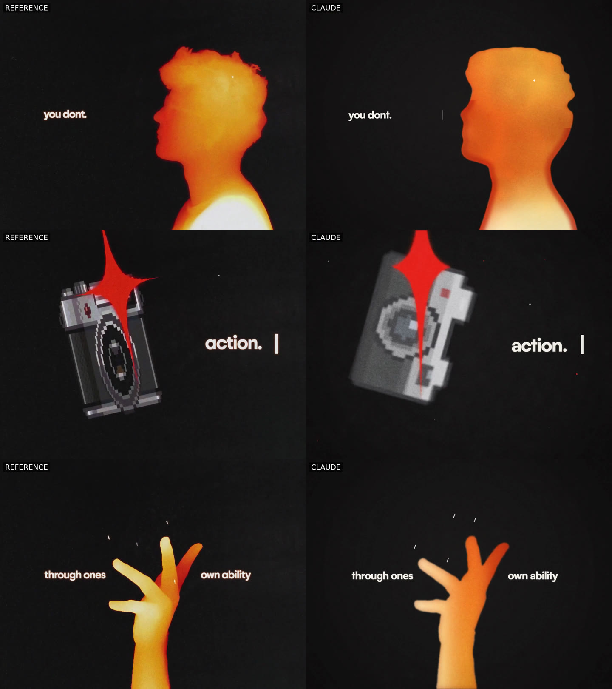
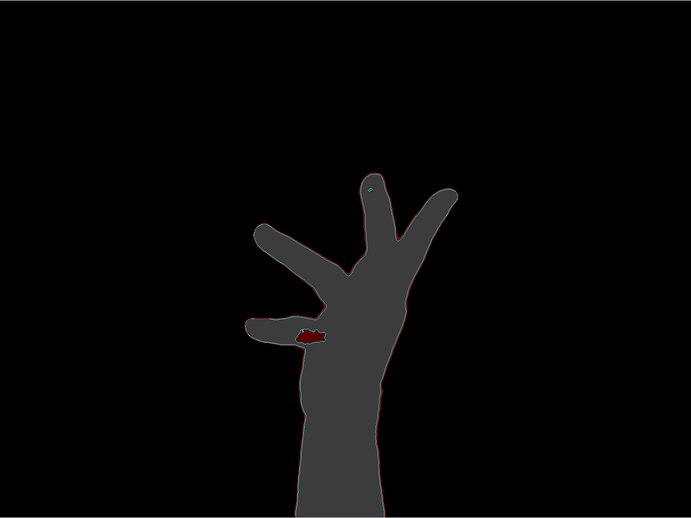

Start with a reference
“replicate this video from scratch, make it identical.”
The goal was fidelity to the supplied video, not a new visual direction.
A reference video became a timeline of code-drawn frames. Then Claude rendered it, critics compared it, and the implementation changed. Again and again.
The useful part wasn’t one perfect generation. It was making the differences visible enough to fix.

The original request supplied an MP4 and an MP3, asked for a faithful recreation, and requested iterative Sonnet critics. These are short, verbatim user excerpts; private locations and unrelated conversation are omitted.
“replicate this video from scratch, make it identical.”
The goal was fidelity to the supplied video, not a new visual direction.
“The website should have each version + the video + the side by side comparison”
The showcase became a record of the work, not just a final export.
“Okay nice run thru judge again, continue iterating as this website builds”
Rendering, critique and publishing continued together.
This sequence comes from the session’s tool calls and outputs, checked against the code and media in this repository. It is a condensed workflow, not a transcript.
ffprobe established dimensions, duration and frame rate. ffmpeg extracted contact sheets and selected stills. Denser samples around transitions exposed cuts, letter placement and icon movement that a single poster frame couldn’t explain.
The source was 2880×2160 at 24000/1001 fps (about 23.976).
An initial browser-renderer test failed on a missing system library. Native Canvas worked. The implementation split into type and effects, pixel sprites, figures, and 14 shots selected by time. A frame can be drawn without playing everything before it.
Code: src/scenes.js · src/lib/
Node workers draw frame chunks with @napi-rs/canvas. ffmpeg encodes the segments and muxes the MP3 soundtrack. Previews are 1440×1080; a 2× render with four time samples per frame adds motion blur at 2880×2160.
Code: src/render.js
Three read-only Sonnet critics covered the opening, middle and finale. They saw reference/render sheets, scored their section and listed discrepancies. Those notes drove timing, scale, silhouette and colour changes, followed by another render.
Artifacts: version history · an early comparison sheet. Historical sheets have alignment limitations; see below.
Silhouette overlays measured shape overlap; region probes checked colour. The hand was eventually rotoscoped—its outline traced from source frames—then shaded in code. Later work also used source-derived head masks, pen ink and hand tone maps.
Code: shape-compare.js · region-color.js · trace-hand.js
The site gained version history, side-by-side videos, scores and comparison sheets. Early overwritten previews were rebuilt from commits. Web encodes and metadata now live in media/; the static build packages that archive without re-rendering it.
Code: build-site.js · media index
Motion warning: fast cuts and flashing imagery. Playback is opt-in.

The session discovered that some reference/render images paired different frames. Time sampling and ffmpeg’s timestamp-based pairing created misleading timing critiques. A later correction selected and paired frames by index, then re-ran the judges.
Archive caveat: the historical sheets and v15/v16 pairs shipped with this walkthrough predate that later correction. Treat them as build-history artifacts, not frame-accurate timing evidence. Use the explicit single-frame check below before changing animation timing.
Larger pairs and stricter judging changed the rubric. Earlier v14 scores were 6.8 / 7.9 / 8.4; a later re-judge gave 5.0 / 5.5 / 5.5. That isn’t a clean regression measurement, especially with alignment errors in the mix.
Code draws the frames, but the later figures and handwriting use traced source data. This is a reconstruction workflow with rotoscopy, not proof that a prompt independently recreated every shape.
A memory-heavy render failed and left an older preview behind. Limiting mask loading to each worker’s frame range helped the next render complete. Check exit status, frame count and output freshness before building comparisons.
The prompt and commands below are a reusable starting point, distilled from the work—not a replay of the session. Run commands from the repository root in your own checkout.
Study reference.mp4 and use audio.mp3 as the soundtrack. First measure the frame rate, duration, shot boundaries, type, colours and icon placement. Recreate the motion as a deterministic, time-based Canvas timeline. Start with a preview. Compare reference and render at the same frame indices, and verify the pairing. Ask read-only critics to review separate timeline sections and return timestamped discrepancies, regressions and a short prioritized fix list. Check their claims against the source before editing. Iterate on the largest verified differences. Keep each version’s render, side-by-side video, comparison images and notes in a browsable site. Explicitly label any traced source material, changing evaluation criteria and remaining mismatches. Do not call it identical without evidence.
With a current Node.js LTS release and npm installed, the committed media is enough. No model account, ffmpeg, font download or npm dependency install is required for this route.
npm run site:build
node scripts/serve-site.js 8787 distOpen http://127.0.0.1:8787/site/, then choose How we made this. Deploy the whole dist/ directory, including dist/media/, to static hosting. Both pages use relative links, so a hosting subdirectory works too.
You also need Bash, curl, ffmpeg and ffprobe (including H.264/AAC encoding and the drawtext filter for comparison scripts). Font fetching needs network access. Allow several GB of free disk space and RAM; start with two workers and reduce to one if memory is tight.
Use source media you have permission to process. For a demonstration, these commands copy the committed web reference and soundtrack into the ignored ref/ directory. The web reference is re-encoded: it is not the original full-resolution input, so tracing and measurements may differ. Run in a fresh checkout; the copy commands replace those local inputs.
npm ci &&
bash scripts/fetch-fonts.sh &&
cp media/original/original.mp4 ref/reference.mp4 &&
cp media/original/original.mp3 ref/audio.mp3 &&
node scripts/trace-hand.js hand &&
node scripts/trace-hand.js head &&
node scripts/trace-ink.jsThe fonts and generated ref/derived/ masks are not bundled. Without them, fallback fonts or drawn shapes can change the result. These tracing scripts are tuned to this particular reference, not arbitrary videos.
node src/render.js --workers 2 --out out/preview.mp4 &&
ffprobe -v error -select_streams v:0 -count_frames \
-show_entries stream=width,height,nb_read_frames \
-of default=noprint_wrappers=1 out/preview.mp4 &&
bash scripts/sidebyside.sh out/preview.mp4 out/sidebyside.mp4Confirm the render succeeded and produced a fresh, full-length video before running the next command. Renders share out/segments/, and preview filenames are reused; copy an accepted version to a separate archive before the next pass.
The full export costs more time and memory. Contact sheets are useful for browsing, but the historical comparison scripts in this checkout have the alignment caveat above.
node src/render.js --scale 2 --samples 4 --workers 2 --out out/final.mp4
bash scripts/compare.sh out/preview.mp4 out/compare/local
bash scripts/judge-pairs.sh out/preview.mp4 out/judge/localAt this project’s frame rate, zero-based frame 120 is at 120 × 1001 / 24000 = 5.005 s. Render that frame and extract that numbered source frame separately. This avoids pairing two running streams by their timestamps.
node src/render.js --stills 5.005 &&
ffmpeg -v error -y -i ref/reference.mp4 \
-vf "select='eq(n,120)',scale=1440:1080" \
-frames:v 1 out/reference-120.png &&
ffmpeg -v error -y -i out/reference-120.png \
-i out/stills/r_5.005.png -filter_complex hstack \
-frames:v 1 out/pair-120.pngOpen out/pair-120.png. Repeat at cuts and disputed frames. This assumes both timelines start at the same source frame; verify that when adapting the process to another video. A still checks shape and placement—not the whole motion.
This walkthrough was checked against a read-only snapshot of the project’s Claude Code session on , through 15:36 UTC, and the committed v1–v16 archive. The session was still active and v17 work had begun; no completed v17 result is claimed here.
The archive’s named “final” export is v14; v16 is the latest archived iteration used by this page. Later alignment fixes and re-judging seen in the session are discussed as lessons, not silently substituted into the archived files or scores.
Only relevant user excerpts are reproduced. Private paths, session identifiers, raw transcripts, unrelated conversation and internal reasoning are not published. The commands are a practical guide to the current code, not a guarantee of bit-for-bit reproduction or a perfect visual match.